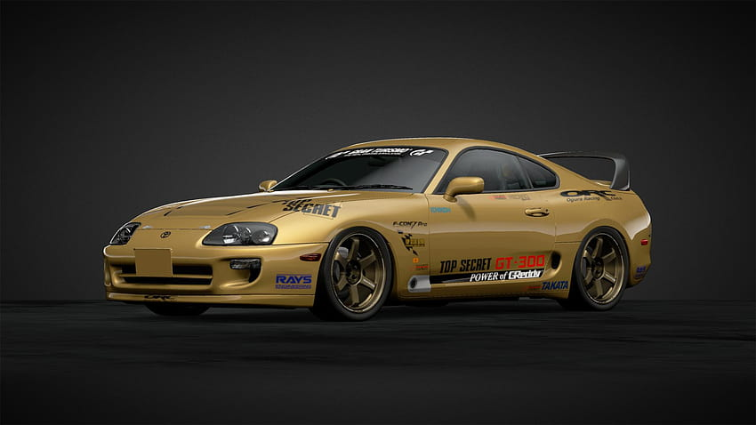
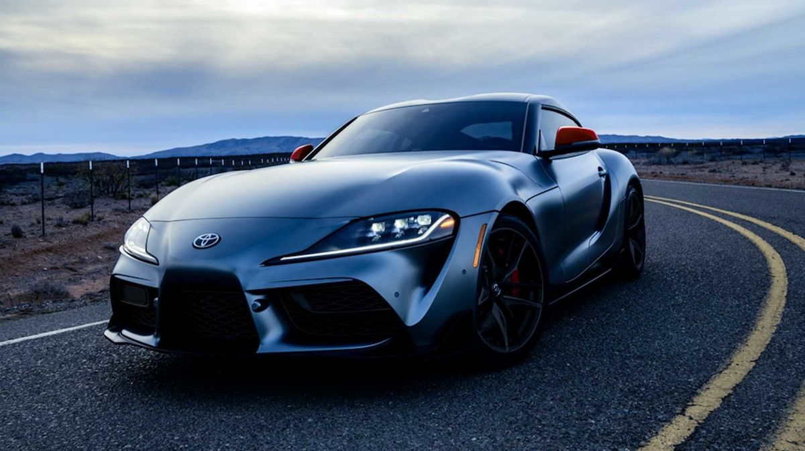
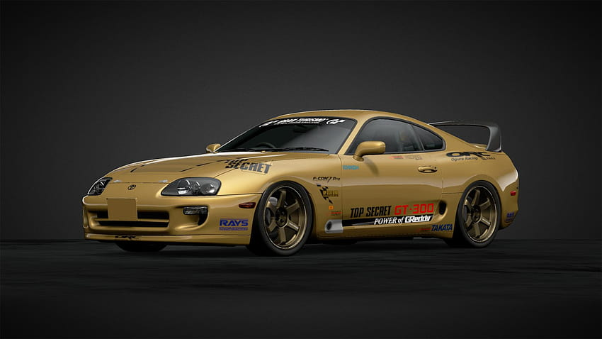
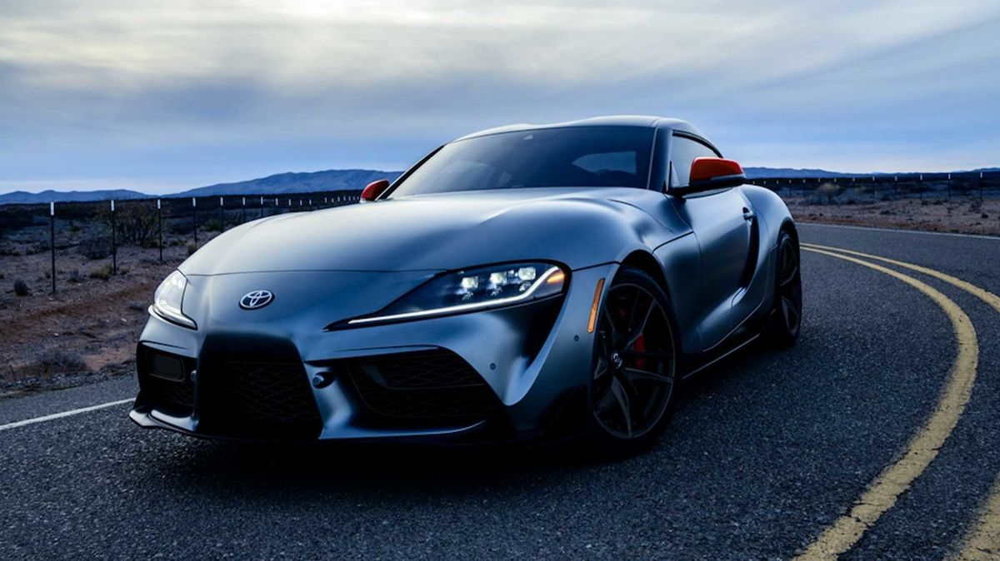

Modely:
-
Nissan GT-R
je jedním z nejznámějších modelů JDM automobilů a patří mezi nejlepší sportovní vozy na trhu. Tento výkonný automobil má maximální rychlost
blížící se 300 km/h a je poháněn vysokovýkonným motorem. Cena Nissan GT-R se pohybuje kolem 100 000 až 150 000 dolarů, v závislosti na konkrétním modelu a specifikacích.
Vzhled Nissan GT-R je moderní a agresivní, s širokými blatníky, výraznými liniemi a sportovními prvky. Kromě toho má auto také nízký a aerodynamický profil, což dodává celkovému vzhledu dynamiku.
Mezi hlavní plusy Nissan GT-R patří vysoký výkon, nízká hmotnost a vynikající ovladatelnost. Tyto vlastnosti dělají z Nissan GT-R jedno z nejlepších aut pro sportovní jízdu a závodění.
Minusy Nissan GT-R se týkají především ceny, která může být pro některé lidi příliš vysoká. Kromě toho mohou být některé funkce a technologie považovány za složité, což může být pro některé řidiče výzvou.


-
Toyota MR2
(Mid-engine, Rear-wheel drive, 2-seater) byl sportovní automobil vyráběný japonskou automobilkou Toyota. Byl produkován v letech 1984 až 2007
a byl určen pro zákazníky, kteří hledali výkonný a zábavný sportovní automobil s malými rozměry.
Maximální rychlost Toyota MR2 se pohybovala kolem 240 km/h, což bylo dostatečné pro sportovní jízdu. Cena tohoto auta v době uvedení na trh se pohybovala
kolem 15 000 až 20 000 dolarů, což bylo cenově dostupnější než některé jiné sportovní auta.
Vzhled Toyota MR2 je kompaktní a aerodynamický, s mnoha sportovními prvky jako jsou široké blatníky, velké kola a výfukové koncovky.
Tyto prvky dodávají celkovému vzhledu agresivní a sportovní charakter.
Mezi hlavní plusy Toyota MR2 patří výkonný motor, skvělá ovladatelnost a nízká hmotnost. Tyto vlastnosti dělají z Toyota MR2 zábavné auto pro sportovní jízdu.
Minusy Toyota MR2 se týkají především interiéru, který může být pro některé řidiče příliš jednoduchý a neuspokojivý.
Kromě toho mohou být některé funkce a technologie považovány za zastaralé, což může být pro některé řidiče nevýhodou.
Tyto nedostatky však nebrání v tom, aby byl Toyota MR2 oblíbeným modelem mezi fanoušky JDM aut.


-
Toyota supra
je jedním z nejznámějších a nejoblíbenějších modelů JDM aut. Byl produkován japonskou automobilkou
Toyota v letech 1978 až 2002 a byl považován za jeden z nejlepších sportovních aut své doby.
Maximální rychlost Toyota Supry byla vysoká a pohybovala se kolem 270 km/h, což ji řadilo mezi jedny z nejrychlejších
sportovních aut na trhu. Cena Toyota Supry se pohybovala v rozmezí 30 000 až 50 000 dolarů, což bylo cenově srovnatelné s
jinými sportovními auty v této třídě.
Vzhled Toyota Supry je elegantní a aerodynamický s mnoha sportovními prvky jako jsou široké blatníky, velká kola a výfukové koncovky.
Tyto prvky dodávají celkovému vzhledu agresivní a sportovní charakter.
Mezi hlavní plusy Toyota Supry patří výkonný motor, skvělá ovladatelnost a dobrá dynamika jízdy. Tyto vlastnosti dělají z Toyota Supry
zábavné a výkonné auto pro sportovní jízdu.
Minusy Toyota Supry se týkají především vysoké ceny a vysokých provozních nákladů. Tyto náklady mohou být pro některé řidiče příliš
vysoké a bránit jim v tom, aby si mohli pořídit toto auto. Kromě toho mohou být některé technologie považovány za zastaralé, což může
být pro některé řidiče nevýhodou. Tyto nedostatky však nebrání v tom, aby byla Toyota Supra oblíbeným modelem mezi fanoušky JDM aut.
 


